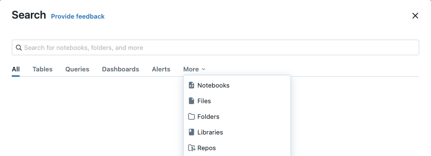

Search for workspace objects
This article describes how to search for tables, notebooks, queries, dashboards, alerts, files, folders, libraries, jobs, repos, partners, and Marketplace listings in your Databricks workspace.
Tables must be registered in Unity Catalog to appear in search results.
Note
The search behavior described in this section is not supported for non-E2 workspaces. In those workspaces, you can click Search in the sidebar and type a search string in the Search Workspace field. As you type, objects whose name contains the search string are listed. Click a name from the list to open that item in the workspace.
In workspaces that use customer-managed keys for encryption, notebook contents and query contents are not available in search.
Advanced search
To filter search results by object type, object owner, or last modified date using the advanced Search dialog, do the following:
Click the Search field in the top bar of the Databricks workspace or use the keyboard shortcut Command-P, and then press Enter.
The advanced Search dialog appears.
Enter your search criteria.
Select an item from the list.

You can search by text string, by object type, or both. After you type your search criteria and press Enter, the system searches the names of all queries, dashboards, alerts, files, folders, notebooks, libraries, repos, partners, and Marketplace listings in the workspace that you have access to. If your workspace is enabled for Unity Catalog, the system also searches table names, table comments, column names, and column comments.
Search by text string
To search for a text string, type the string into the search field and then press Enter. The system searches the names of all objects in the workspace that you have access to. It also searches text in notebook commands, but not in non-notebook files.
You can place quotation marks around your search entry to narrow search results to only documents that contain your exact phrase.
Exact match search supports the following:
Basic quotation marks (for example,
"spark.sql(")Escaped quotation marks (for example,
"spark.sql(\"select")
Exact match search doesn’t support the following:
With quotation marks and without quotation marks (for example,
"spark.sql" partition)Multiple quotation marks (for example,
"spark.sql" "partition")
Semantic search
Preview
This feature is in Public Preview.
You can use natural language to search Unity Catalog tables in the advanced Search dialog. Search returns results that have related semantic meaning.
Limit search to a specific object type
You can also search for items by type (such as file, folder, notebooks, libraries, table, or repo) by clicking the corresponding tab in the advanced Search dialog. A text string is not required. If you leave the text field blank and then press Enter, the system searches for all objects of that type. Click a name from the list to open that item in the workspace. You can also use the dropdown menus to search for items by owner or by the last modified date.
Search tables in Unity Catalog-enabled workspaces
In workspaces enabled for Unity Catalog, you can search for tables registered in Unity Catalog. You can search on table names, table comments, column names, and column comments. You can filter search results by parent catalog and database (schema) in the advanced Search dialog.
You can also sort the results by the table’s popularity.
Search results don’t include:
Tables that you don’t have permission to see.
In other words, for a table to appear in your search results, you must have at least the
SELECTprivilege on that table, theUSE SCHEMAprivilege on its parent schema, and theUSE CATALOGprivilege on its parent catalog. Metastore admins have those privileges by default. All other users must be granted those privileges. See Unity Catalog privileges and securable objects.Tables in the legacy Hive metastore (that is, in the
hive_metastorecatalog).To upgrade these tables to Unity Catalog and make them available for search, follow the instructions in Upgrade tables and views to Unity Catalog.